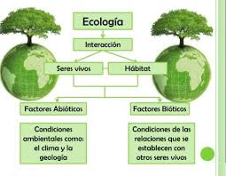
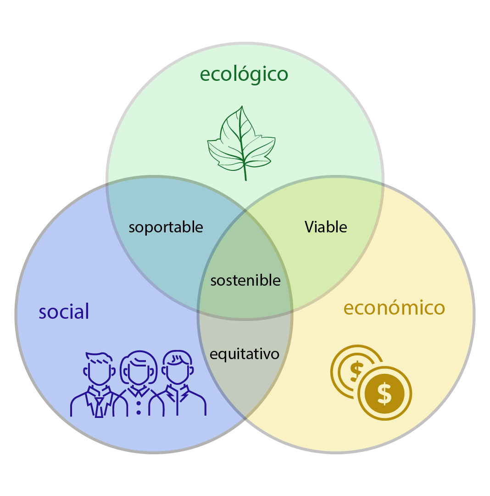
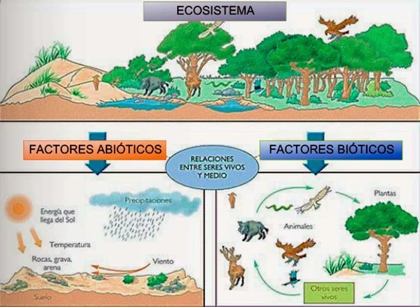
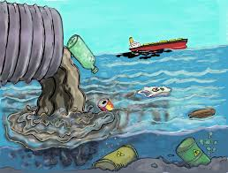

¿QUE ES LA ECOLOGIA?
¿Alguna vez has paseado por el bosque y has visto la increíble diversidad de organismos que viven juntos, de los helechos a los árboles, a los hongos del tamaño de platos? ¿O has viajado por carretera y visto por la ventana cómo va cambiando el paisaje, de los bosques de encinos a los pinos altos, a los pastizales? Si es así, ya conoces lo más clásico de la ecología, la rama de la biología que estudia cómo los organismos interactúan entre ellos y con su entorno físico.
Sin embargo, la ecología no se trata solo de bosques ricos en especies, naturaleza virgen o vistas panorámicas. ¿Alguna vez has encontrado cucarachas viviendo bajo tu cama, moho creciendo en tu ducha o incluso hongos invadiendo la piel entre tus dedos? Si es así, entonces has visto ejemplos igualmente válidos de la ecología en acción

Historia de la Ecología
1749Buffon introduce el término "milieu" en referencia al medio ambiente. |
1866Ernst Haeckel acuña el término "ecología". |
1896Vladimir Vernadsky publica "La Biosfera", precursora de la ecología moderna. |
1927Arthur Tansley introduce el término "ecosistema". |
1962Rachel Carson publica "Primavera Silenciosa", impulsando el movimiento ambientalista. |
1972La Conferencia de Estocolmo establece el Programa de las Naciones Unidas para el Medio Ambiente (PNUMA). |
1987La Comisión Mundial sobre Medio Ambiente y Desarrollo de la ONU publica el Informe Brundtland, definiendo el concepto de desarrollo sostenible. |
1992La Cumbre de la Tierra de Río de Janeiro marca el inicio de la Agenda 21. |
2005Se publica el Informe del Milenio de las Naciones Unidas, que incluye objetivos de desarrollo sostenible. |
2015Adopción de los Objetivos de Desarrollo Sostenible por la ONU. |
SUSTENTABILIDAD
¿QUE ES LA SUSTENTABILIDAD?
El desarrollo sustentable es hacer un uso correcto de los recursos actuales sin comprometer los de las generaciones futuras. Esto significa que los procesos sustentables preservan, protegen y conservan los recursos naturales actuales y futuros.Herman Daly, economista ecológico estadounidense, profesor y galardonado en 1996 con el Premio Nobel Alternativo o Premio Right Livelihood, que consiste en “honrar y apoyar a organizaciones y personas valientes que proponen soluciones visionarias y ejemplares a las causas profundas de los problemas globales”, definió algunos principios de la sustentabilidad.

Daly también establece que se debe impulsar aquella tecnología que aumente la productividad de los recursos naturales (un mayor beneficio por el uso del recurso) y reducir aquellas que requieren una mayor cantidad de recursos naturales para producir lo mismo.
Basado en estos principios se puede establecer que la relación entre el crecimiento de las actividades humanas (que implican el consumo de los recursos naturales), la resiliencia del ecosistema y las acciones para renovar los recursos naturales y/o las acciones efectuadas para mitigar los efectos contaminantes, determinarán si un proceso es sustentable o si por el contrario contribuye al deterioro ambiental.

SOSTENIBILIDAD
El desarrollo sostenible es un concepto que se aplicó por primera vez en 1987 en el Informe Brundtland. Refiere a la búsqueda de un avance social y económico que asegure a los seres humanos una vida sana y productiva, pero que no comprometa la capacidad de las generaciones futuras de satisfacer sus propias necesidades. A partir de la importancia mundial de los recursos naturales y de la necesidad de su uso racional bajo los principios de Daly, la sostenibilidad busca un desarrollo social que contribuya a mejorar la calidad de vida, salud, educación y cultura de todas las personas.La mejor forma de entender la sostenibilidad y su importancia son los 17 Objetivos de Desarrollo Sostenible (ODS) que se aprobaron en la agenda 2030 de la Organización de las Naciones Unidas (ONU). Estos objetivos se encuentran interrelacionados entre sí. Los ODS tienen una visión global y comprenden desde la búsqueda de la eliminación de la pobreza, de las desigualdades, de una educación de calidad, evitar la degradación ambiental y establecer los caminos que lleven a un mundo más próspero, con paz y justicia.
¿CUAL ES LA DIFERENCIA ENTERE SUSTENTABLE Y SOSTENIBLE?
La diferencia entre sostenible y sustentable es que la primera tiene en cuenta los procesos antes descritos que tienen como objetivo lograr un cambio profundo: medioambiental, social, económico, político y cultural; mientras que la segunda se centra en la defensa y el uso racional de los recursos. Por tanto, algo que es sostenible cumple con una serie de procesos que ayudan a crear un entorno social mejor y más respetuoso con el planeta y algo sustentable es aquello que se mantiene por sí mismo, si se trata de forma adecuada.Factores Ambientales
FACTORES BIOTICOS Y ABIOTICOS
Uno de los objetivos principales de la ecología es entender la distribución y abundancia de los seres vivos en el ambiente físico. Por ejemplo, tu jardín o el parque de tu barrio probablemente tiene un conjunto muy diferente de plantas, animales y hongos que el jardín de un compañero que vive al otro lado del mundo. Estos patrones en la naturaleza se basan en las interacciones entre los organismos y entre estos y su entorno físico.Como ejemplo, volvamos al moho de la ducha. Es más probable que el moho aparezca en tu ducha que, digamos, en el cajón de tus calcetines. ¿Por qué pasa esto?
*Tal vez el moho requiere cierta cantidad de agua para crecer y esta cantidad de agua solo se puede encontrar en la ducha. La disponibilidad de agua es un ejemplo de un factor abiótico, o inerte, que puede afectar la distribución de los organismos.
*Tal vez el moho se alimenta de células cutáneas muertas que pueden encontrarse en la ducha pero no en el cajón. La disponibilidad de nutrientes proporcionada por otros organismos es un ejemplo de factor biótico, relacionado con los seres vivos, que puede influir en la distribución.

Factores Abióticos
Luz Solar: Energía proporcionada por el sol, es crucial para la fotosíntesis y el ciclo de vida.Temperatura: Grado de calor o frío en un ambiente, influye en el crecimiento y la distribución de organismos.
Agua: Esencial para la vida, afecta la disponibilidad de hábitat y la composición de los ecosistemas.
Suelo: Medio físico y químico donde crecen las plantas, vital para la agricultura y la filtración de agua.
Aire: Composición de gases, incluyendo oxígeno y dióxido de carbono, necesarios para la respiración y la fotosíntesis.
Factores Bióticos
Consumidores: Organismos que obtienen energía al consumir otros organismos, como los animales.Descomponedores: Organismos que descomponen materia orgánica muerta y la reciclan en el ecosistema, como bacterias y hongos.
Productores: Organismos que producen su propio alimento a través de la fotosíntesis, como las plantas.
Factores Ambientales Humanos
Contaminacion del Aire:Emisiones de gases y partículas que afectan la calidad del aire y la salud humana.Contaminación del Agua:Descargas de sustancias químicas y residuos que contaminan cuerpos de agua y afectan la vida acuática.
Deforestación: Pérdida de bosques y hábitats naturales debido a la tala de árboles para agricultura, desarrollo urbano y otros usos.
Cambio Climático: Cambios a largo plazo en el clima global debido a la acumulación de gases de efecto invernadero en la atmósfera.
Urbanización: Expansión de áreas urbanas y desarrollo de infraestructuras que afectan los ecosistemas naturales.
